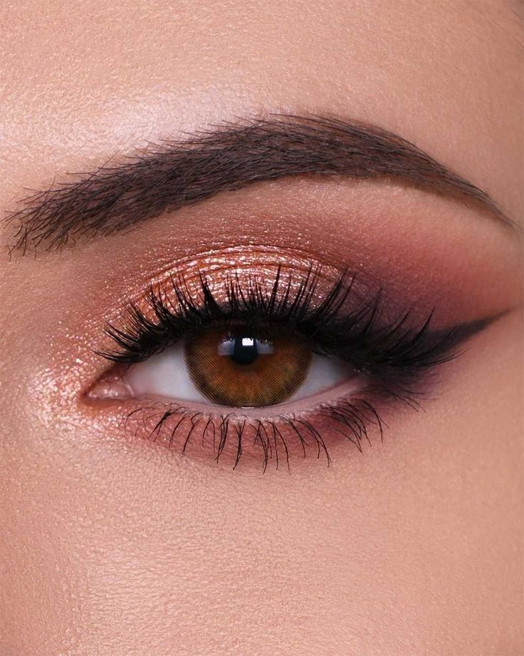

MATTE LOOK
MATTE LOOK gunakan eye primer untuk ketahanan. Oleskan eyeshadow matte warna netral di seluruh kelopak mata sebagai dasar. Tambahkan warna coklat muda di lipatan dan warna coklat tua atau ungu di sudut luar untuk dimensi. Gunakan eyeliner matte di sepanjang garis bulu mata dan aplikasikan maskara pada bulu mata atas dan bawah. Selesai!
 GLITTER LOOKUntuk membuat glitter look eye, mulai dengan mengaplikasikan primer di kelopak mata. Oleskan eyeshadow matte netral sebagai dasar, lalu tambahkan warna matte gelap di lipatan dan blend. Gunakan primer glitter sebelum mengaplikasikan glitter di kelopak mata. Gambar eyeliner di sepanjang garis bulu mata, dan tambahkan maskara pada bulu mata atas dan bawah. Selesai! Nikmati tampilan glamor Anda!
 SMOKEY EYE
SMOKEY EYEUntuk menciptakan tampilan smokey eye, mulailah dengan menggunakan primer di kelopak mata untuk ketahanan. Aplikasikan eyeshadow matte netral sebagai dasar di seluruh kelopak mata. Kemudian, pilih warna gelap, seperti hitam atau coklat tua, dan aplikasikan di sudut luar dan lipatan mata, blend hingga halus. Tambahkan warna sedang di tengah kelopak mata untuk memberikan dimensi. Gambar eyeliner di sepanjang garis bulu mata, dan gunakan kuas untuk meratakan garis jika diinginkan. Akhiri dengan mengaplikasikan maskara pada bulu mata atas dan bawah untuk menambah dramatis. Nikmati tampilan smokey eye Anda!
 NATURAL EYE
NATURAL EYEmulai dengan mengaplikasikan primer di kelopak mata agar eyeshadow lebih tahan lama. Gunakan eyeshadow matte warna nude atau coklat muda di seluruh kelopak mata sebagai dasar. Tambahkan sedikit warna yang lebih gelap di lipatan untuk memberikan dimensi, lalu blend dengan baik agar tampak halus. Gambar garis tipis eyeliner di sepanjang garis bulu mata, atau Anda bisa melewatkannya untuk tampilan yang lebih alami. Aplikasikan maskara secukupnya pada bulu mata atas untuk menambah volume.